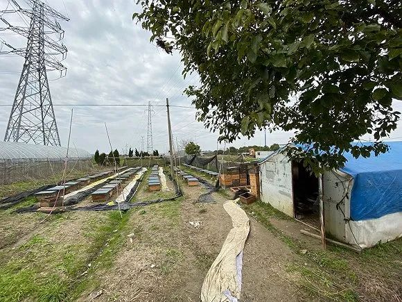
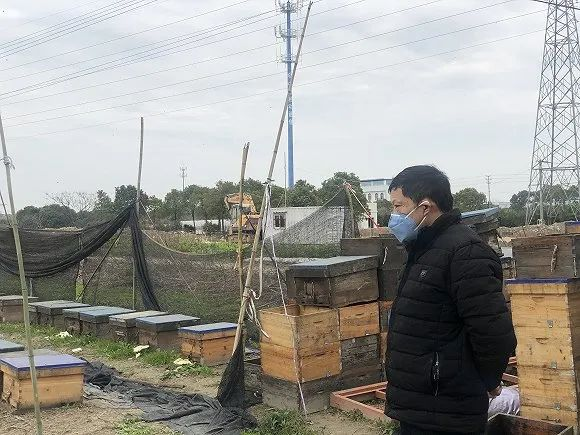
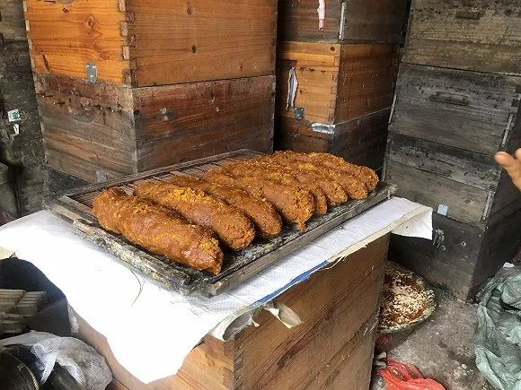
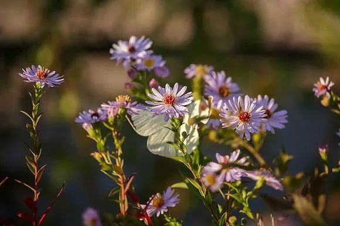
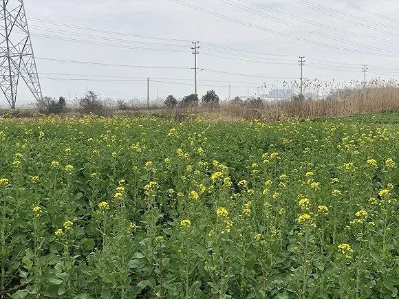

养蜂人上吊自杀，疫情中蜜蜂和蜂农的生死大考
原文链接 备份链接 作者：刘倩 来源：*商业人物*（ID：*biz-leaders）* 养蜂人刘德成死了。在他的蜜蜂因中毒、转场受阻大量死亡之后，于2月13日在云南上吊自杀。 他的死将蜂农这一群体带入大众的视线，也让人们知道新冠肺炎疫情影 …
 图片来源：图虫
图片来源：图虫
记者：张钦 编辑：牙韩翔
“
疫情阻断了中国大部分养蜂人的追花之旅，他们盼望着春天花期的来到，但是却无能为力。
”
“三百天来九州跑，南疆北国采花娇”，在中国，大约有800万人过着这样的游牧式的生活。
屠忠诚和妻子两人就已经过了三十年追着花期跑的日子。2019年秋天，屠忠诚一家转场回到家乡宁波慈溪市崇寿镇海运村歇息，与此同时大批蜂农们的转场还在继续。
但一月份持续至今的疫情绊住了蜂农们的脚步。
每年春天，养蜂人们就拖着几十斤重的蜂箱、几百斤重的蜜桶，一百二十余群蜜蜂、一顶帐篷和一箩筐炊具上路了。有人自驾也有人租车，一路追赶每一个花期，从洋槐花、椴树花到油菜花。
这个过程人们称之为转场。每到一片花田，养蜂人们就扎起帐篷，蜜蜂们四散去采蜜，二十天后养蜂人将蜂巢中的蜜割下来装在蜜桶里，转到下一个地方。
最后，养蜂人们陆续回到越冬点，蜂蜜也将被收购人买走送去蜂蜜加工厂。
很多养蜂人的冬天一般是在云南度过的。这里冬季也有花开，气候适宜。今年疫情影响之下，由于交通管制，不少蜂农困在云南，他们无法转移到下一个地方。眼下，四川的油菜花马上就要开了。

屠忠诚的蜂箱和棚屋。图片来源：张钦
屠忠诚还算庆幸，“这算一时半会三四月无法转场，慈溪这边还算暖和，油菜花渐渐开了，蜜蜂们还能采油菜花蜜。”
屠忠诚的蜂箱就安放在海运村村口不远处的田地里，一旁支着一顶陪着他走南闯北的帐篷。帐篷里，屠忠诚搬出之前蜜蜂采的花蜜，揉成大段面团状，这是蜂群们近来的饲料。

养蜂人屠忠诚。（图片来源：张钦）

蜜蜂近来的花蜜饲料。（图片来源：张钦）
而另一群蜂农就不那么幸运了。“我有个亲戚也是蜂农就在云南呢，按花期看，也该去四川了，可他们就是进不去，当地不接受外地来的蜂农，我们村这边的情况也一样，”屠忠诚的微信上有好些蜂友群，这些天来消息不断，满眼是蜂农的焦灼与难题。
除了转场路途无法顺利持续之外，还有一部分养蜂人面临着“人蜂分离”的尴尬情况。
肖苏珊是一名新疆昌吉的养蜂人，去年11月，她在吐鲁番租了农户的地，露天放置了好几百个蜂箱，留下的白糖饲料只够一个冬天，而肖苏珊夫妻俩则回到了昌吉过年。
漫长的冬天是培育越冬蜂的好时候，体质弱的蜜蜂会在冬天被淘汰，新的强健的蜂王会在这个冬天加冕，能够越冬的蜜蜂寿命比较长，能挨到半年，同样秋冬也是蜂螨的高发季节。
疫情发生以来，交通有所限制之后，肖苏珊没有办法立即回到吐鲁番。她每天都在担心蜜蜂们早已吃完了白糖饲料，而自己却无法及时去除螨和喂白糖。
“一般来说，2月10日是春繁的日子了，我要把蜂王放出来，越冬时期无法繁殖，可现在蜂群们完全没人管。”肖苏珊对界面新闻说。
肖苏珊的担忧也是北疆诸多蜂农的困境。北疆的蜂群百分之九十都在吐鲁番过冬，一部分蜂农无法及时将蜂群带进吐鲁番，一部分蜂农无法把蜂群运出吐鲁番，蜂种面临着死亡。
2月13日，一位名叫刘德成的养蜂人和他176箱蜜蜂还是没能挺过这个冬天。这是来自四川西昌的刘德成只身带着蜂群，第一年来云南易门越冬。可悲剧还是发生了，由于田地里农药较多，加之刘德成在给自己蜂群打螨虫药时下重了手，蜜蜂中毒后成群死去，也许是无力承担损失，刘德成选择了离开人世。
2月15日，相关部门印发《关于解决当前实际困难加快养殖业复工复产的紧急通知》，其中包括各地方要疏通好蜂农的转场工作。
“文件铺天盖地，天天有，我们也认不清真假，可要说到我们自己身上，还看不到起色。”肖苏珊一心期盼的是疫情早点过去。
屠忠孝则将这次滞留看作是又一次“靠天吃饭”的挑战。
除了疫情，平日里每一场突如其来的暴雨、洪水和干旱都会造成极大的损失，尽管快手抖音上诸多蜂农分享了沿路的花海和笑声，转场路上未知难题带来的愁绪和辛苦总多过于花海带来的愉悦心情。

图片来源：图虫
养蜂人没有一条固定的转场路线，花期是唯一的指南针。
每到一个地方就在花田边上支个临时帐篷，摆开炊具和床具，养蜂人就有了一个为期二十天的家了。屠忠诚的蜂友们有的路线是从江苏、安徽、河南一路追着洋槐花走，再赶到山东、东北去找荆条花和椴树花；有的喜欢走西北线，专门采陕西、山西一带的洋槐花蜜，再去到宁夏、青海。
屠忠诚的微信名叫“为了甜蜜”，2019年他追赶甜蜜的路不那么顺利。
4月屠忠诚夫妻俩来到河南信阳采洋槐花蜜，可洋槐花刚开就变了天，连着几夜瓢泼的雨意味着今年河南的洋槐花蜜泡汤了。继而，屠忠诚来到山西找洋槐，马马虎虎打了一点蜜，质量也不算太好。蜂蜜的质量与蜜蜂身体状况以及流蜜情况有关。
一路向北，屠忠诚跑到河北找枣花和荆条花，可去年夏季北方太旱了，连山上的荆条花都干了，屠忠诚不得不作罢。6月底夫妻俩辗转到了内蒙古呼伦贝尔草原找油菜花，同时段不少蜂农们去了辽宁锦州继续找荆条花。

新疆向日葵花田。（图片来源：张钦）
和全年舟车劳顿的屠忠诚比，新疆的蜂农只需辗转吐鲁番和昌吉两地。肖苏珊每年三月开始在昌吉周转，和农户们签订采蜜协议，三月的杏花，接着夏日里有密集的南瓜花、向日葵、葫芦瓜花，有时候四月也会去周边库尔勒找香梨花。
肖苏珊和屠忠诚都是世代养蜂人，而这接力棒似乎很难传下去了。
这几年慈溪市调查养蜂人情况，年轻人不到20个。屠忠诚今年58岁了，随着年龄渐长，转场的路径也会缩短，转场路上也无法自驾，物什多且重夫妻俩也搬不动，自己的小卡车也装不下，只能一路上租六七米高的大货车，这样也有个帮手装卸货，“再过两年我就60岁了，驾照也要降级了。”
“七八十年代的慈溪，养蜂人是第一批万元户，慈溪也是全国养蜂之乡。”宁波天作蜂蜜的董事长金寰对界面新闻说，他经营着一家蜂蜜加工厂企业，“可这么久过去了，现在的养蜂人还是当年的养蜂人，大家都年纪大了，这活儿太累年轻人不愿意干。”
养蜂人一年辛苦到头，普通的夫妻俩也仅仅能挣到10万元。可养蜂不仅仅只有经济效益，更重要的是对农业的影响，全球七八成的植物都需要蜜蜂授粉，倘若四年内没有蜜蜂这个世界就会有重大农业危机。中国农科院测算过，养蜂业对中国36种主要经济作物的增产贡献，是它自身产值的76倍。蜂农近来的“滞留”遭遇也意味着农业的减产。
“国内的蜂蜜质量和国外的还是有差距的，优质蜂蜜多是天然成熟，国内还是靠加工成熟，蜂蜜原料收割过来水分这么高，价格自然拉不高，终端售价也卖不高。”金寰说。在他看来，一个行业没有利益驱动，也无法有更先进的技术投入，无法吸引人们继续养蜂，

屠忠诚家附近的油菜花田。（图片来源：张钦）
这两天气温有些升高了，肖苏珊心里惦记着，家这边漫山遍野的杏花就要开了，桃红的粉白的，好生热闹。三千八百公里以外，屠忠诚看着田地里零零落落的金黄色，心底稍有了安慰，油菜花会开，春天还会来。
未经授权 禁止转载

文章已于修改
原文链接 备份链接 作者：刘倩 来源：*商业人物*（ID：*biz-leaders）* 养蜂人刘德成死了。在他的蜜蜂因中毒、转场受阻大量死亡之后，于2月13日在云南上吊自杀。 他的死将蜂农这一群体带入大众的视线，也让人们知道新冠肺炎疫情影 …
原文链接 备份链接 2月3号，情势已经急转直下。刘德成发了一个朋友圈，说自己的蜜蜂中毒了。 在四川攀枝花繁蜂的徐仁柱看到后跟他聊了起来。那个晚上，刘德成告诉徐仁柱，从大年初三到现在，光是死去的蜜蜂，他就装了六七桶，都倒掉了，那是能装三四 …
原文链接 备份链接 ——《重要通知》：关于改名的通知—— 早上起床的时候，我放在被子上的手指忽然被什么东西刺了一下，我把手指放到眼前，想看清楚什么东西扎进去了，却什么也没看到，但手指生疼得厉害。 按照我的以往的惨痛经验，我知道我被野蜂蛰 …